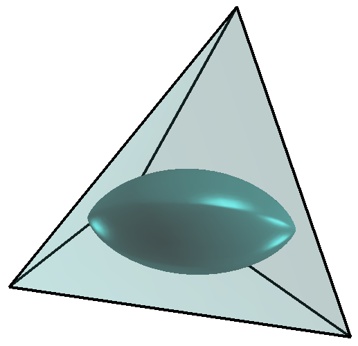
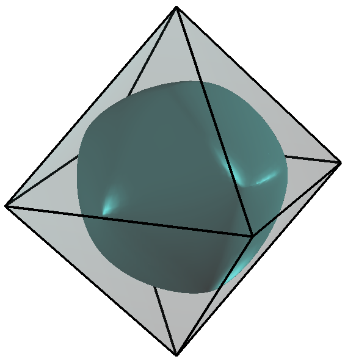

Optimization - constant width, diameter and convexity constraints
Collaboration with Pedro Antunes.
 |
 |
 |
| Meissner's body: minimal volume at fixed width in 3D | Minimal volume rotor in tetrahedron | Minimal volume rotor in octahedron |
More details in the paper.
← Back to numerical computations
Created: Sept 2017, Last modified: Sept 2017